Video Language Planning
1. Quick overview of the paper
| quick review questions | concise answer |
|---|---|
| What should the paper solve? | LLM/VLM are good at long-range semantic planning but lack fine-grained physical dynamic reasoning; video models can express dynamics but short horizons are prone to degradation. What the paper wants to solve is: how to combine the two to generate an executable multi-modal video language plan for complex long-range robot tasks. |
| The author's approach | Use forward tree search to combine three modules: $\pi_{\text{VLM}}(x, g)$ generates candidate text actions, $f_{\text{VM}}(x, a)$ generates a short video rollout of the action, and $H_{\text{VLM}}(x, g)$ estimates how many steps are left to the target and prunes. |
| most important results | In the Language Table long-term execution task, VLP achieved 64% / 92% / 16% completion in Move to Area / Group by Color / Make Line respectively, significantly higher than UniPi, LAVA, RT-2 and PaLM-E; the accuracy of the generated video plan in the sim/real multi-task is also significantly higher than the combination without value function and UniPi. |
| Things to note when reading | Don't understand VLP as an end-to-end policy. Its core is test-time composition and search: the video model is not a direct controller, but a dynamics-like rollout model; real execution relies on goal-conditioned policy, and the quality of planning is exchanged for more inference calculations. |
Difficulty rating: ★★★★☆. Need to understand VLM/LLM planning, text-to-video diffusion, tree search, goal-conditioned policy, long-range robot evaluation.
Keywords: video language planning, VLM, text-to-video dynamics model, forward search, heuristic function, goal-conditioned policy, long-horizon manipulation.
Core contribution list
- Video Language Planning (VLP) is proposed.Combine VLM and video models through tree search to jointly express long-range plans in language and video.
- Use VLM as both policy and heuristic.The policy generates the next text action, and the heuristic predicts how many actions are left before the goal is completed, thereby evaluating the video rollout.
- Use text-to-video model as dynamics model.Given the current image and short text actions, predict future short videos and recursively piece together a long-term video plan.
- Demonstrating inference budget scalability.Increasing the number of language branches, video branches and beams can improve the success rate of video planning.
- Demonstrated execution on three types of robotic platforms.Includes Language Table, 7DoF mobile manipulator, 14DoF bi-manual ALOHA.
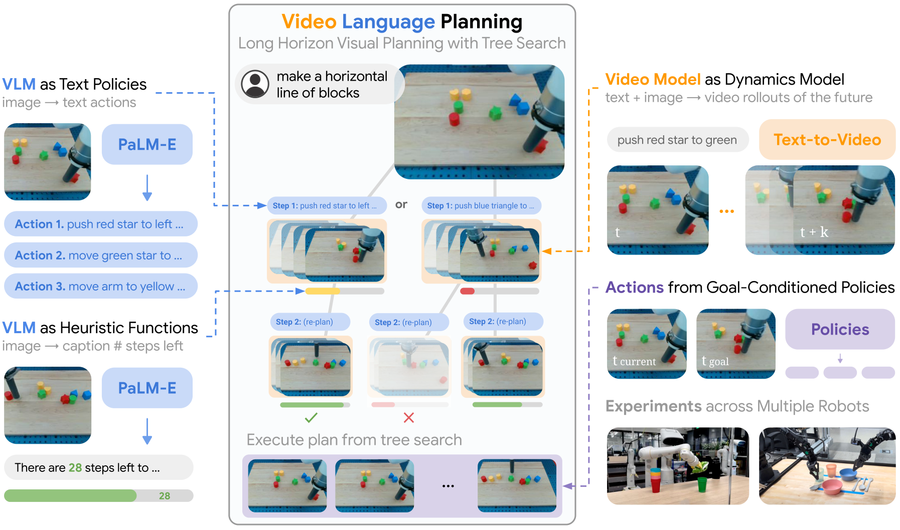
2. Motivation
2.1 Why are long-distance tasks difficult?
Real robot long-range tasks require two types of capabilities at the same time: one is high-level semantic planning, that is, knowing what to do next; the other is low-level dynamic prediction, that is, knowing how the world will change after executing a certain action. Classic task and motion planning have long relied on this decomposition, but the question in the era of large models is: can pre-trained VLM/video models be used to replace handwritten symbolic models and dynamic models.
2.2 Limitations of using LLM/VLM alone
LLM can generate step-by-step text plans, and VLM can incorporate image observations into the plan; however, they are mainly trained on static graphics/question and answer data and tend to lack dynamic reasoning capabilities. For example, by only looking at the current image and target, the model may know the semantic step of "stack the bowls", but it may not be able to predict visual dynamics such as movement, collision, occlusion, and whether the object is reachable.
2.3 Limitations of using video models alone
The Text-to-video model can generate rich future visual states and carry more detailed physical and spatial information than text; however, it is difficult to generate high-quality long videos. Directly giving a long-range instruction requires the model to generate hundreds of frames of plans at a time, which can easily lose consistency or fail to achieve the final goal.
2.4 High-level ideas of this article
The starting point of VLP is combination: VLM is responsible for abstract action candidates and progress evaluation, the video model is responsible for short-range dynamic rollout, and tree search strings multiple short-range rollouts into long-term plans. In this way, the VLM alone is not required to imagine physical dynamics, nor is the video model alone responsible for complete long-range planning.
4. Formalization of the problem
The input is the current visual observation $x_0$ and the natural language long-range target $g$. The output is a long video plan $\{x_t\}_{1: T}$, where each image $x_t$ can be considered a visual sub-goal. The paper assumes that images can be used as world state representations, and uses image goal-conditioned policy to convert visual sub-goals into low-level actions.
4.1 Three core functions
| function | Input and output | role |
|---|---|---|
| $\pi_{\text{VLM}}(x, g)\rightarrow a$ | The current image $x$ and the target $g$, output text action $a$. | High-level policy proposes abstract actions that should be tried next. |
| $f_{\text{VM}}(x, a)\rightarrow x_{1: S}$ | The current image $x$ and the short text action $a$ output a short-range future video. | Dynamics-like video model, simulates the visual state after executing the action. |
| $H_{\text{VLM}}(x, g)\rightarrow \mathbb{R}$ | A certain future image state $x$ and target $g$, output heuristic score. | value/heuristic, evaluates how close the state is to completing the goal. |
4.2 Optimization goals
VLP searches for: among the long video plans that can be sampled by the VLM policy and video model, which final state is closest to task completion.
$$x_{1: H}^{*}=\arg\max_{x_{1: H}\sim f_{\text{VM}}, \pi_{\text{VLM}}} H_{\text{VLM}}(x_H, g)$$| $x_{1: H}$ | A long-term video plan obtained by splicing multiple short video rollouts. |
| $x_H$ | Final image status of the long video project. |
| $H_{\text{VLM}}(x_H, g)$ | VLM heuristic estimate of whether the final state is close to the target. |
| $f_{\text{VM}}, \pi_{\text{VLM}}$ | Qualified candidate plans must be generated by both the text action policy and the video model. |
Note that this is not optimizing the real environment reward in traditional RL, but searching for the most promising plan to complete the task in the future video tree generated by the model.
5. Detailed explanation of method
5.1 VLM as Policy
The VLM policy is responsible for generating candidate text actions from the current image and target. The implementation of the paper follows the PaLM-E idea, using the natural language target and the current image token embedding as context. The author tried two construction methods: one is to provide sample text action labels and let VLM predict the action; the other is to fine-tune PaLM-E with random short segments $x_{1: S}$ and its abstract action labels in long trajectories.
5.2 Video Model as Dynamics Model
Given the current image $x$ and the abstract text action $a$, the video model $f_{\text{VM}}(x, a)$ generates the short video $x_{1: S}$. This video provides two things at the same time: one is the possible result state after the action is performed, and the other is the low-level visual path from the current state to the result state. The training data are short image trajectory snippets and corresponding language labels.
5.3 VLM as Heuristic Function
VLP needs to choose one of many candidate rollouts. For this purpose, the author trained $H_{\text{VLM}}(x, g)$, inputting future images and long-range goals, and outputting how many steps are needed from the current state to the completion of the goal. The training method is: take a certain $x_t$ from the trajectory snippets $x_{1: H}$ that can complete the long-range goal $g$, and let PaLM-E predict how many steps are left before the end of the trajectory. When actually used for searching, the negative value of the predicted step number is taken, so the higher the value, the closer it is to completion.
5.4 Tree Search process
The algorithm maintains $B$ parallel video plan beams. Each planning step, for each beam:
The computing budget here is controlled by three hyperparameters: language branching factor $A$, video branching factor $D$, and planning beams $B$. More budget generates more candidate text actions and video rollouts, so better plans may be found, but the inference time is also longer.
5.5 Prevent exploitative model dynamics
When the search directly optimizes $H_{\text{VLM}}$, it is possible to exploit the pseudo-dynamics of the video model. For example, the object suddenly teleports to the target position, or the final frame blocks the unfinished part, but heuristic gives high scores. Therefore, the paper adds threshold filtering: if a rollout increases the heuristic estimate beyond a fixed threshold, the video will be discarded to avoid using unphysical model loopholes in exchange for high scores.
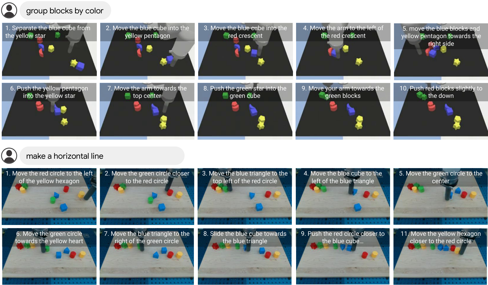
5.6 From video planning to action execution
Different from the frame-by-frame inverse dynamics in the previous UniPi, this paper emphasizes that many adjacent video frames cannot be reached by a single action, so a short-range goal-conditioned policy is used:
It inputs the current image $x$ and the target frame $x_g$ in the video plan, and outputs the low-level control $u$ that moves the robot toward $x_g$. During training, $x_t$ and future state $x_{t+h}$ are randomly sampled from the control trajectory, and $\pi_{\text{control}}(x_t, x_{t+h})$ is used to predict $u_t$.
Receding horizon control will also be used for long-term execution: fix the horizon to generate a plan, and re-observe and replan after a period of execution to reduce the accumulation of execution errors.
5.7 Implementation details in Appendix
| module | Configuration | Source |
|---|---|---|
| Video model training | Follow the UniPi / text-to-video diffusion architecture; base text-conditioned video generation at $24\times40$, then super-resolve to $48\times80$ and $192\times320$; each resolution generates 16 frames. | Appendix Training Details |
| Video model resources | The base text-conditioned video model is trained with 64 TPUv3 pods for 3 days, and the high-resolution super-resolution models are trained for 1 day; separate text-to-video models are trained in different domains. | Appendix Training Details |
| VLM models | Following the PaLM-E architecture and code base; fine-tune single 12B PaLM-E predicts both heuristics and policies; trained with 64 TPUv3 pods for 1 day per domain. | Appendix Training Details |
| Goal-conditioned policy | Using the LAVA architecture, replace the CLIP text encoder with the goal image's ResNet encoder; each domain is trained with 16 TPUv3 pods for 1 day. | Appendix Training Details |
| Language Table planning | horizon 16, beam width 2, language branching factor 4, video branching factor 4; DDIM sampler, base resolution 64 sampling steps, high resolution 4 sampling steps; classifier-free guidance scale 5. | Appendix Planning Details |
| 7DoF mobile manipulator planning | Use PaLM-E to generate scene captions, use few-shot prompted PaLM to generate plans according to SayCan prompts; beam width 3; base resolution $64\times80$, super-resolution $256\times320$; goal policy uses the last frame of the generated video segment. | Appendix Planning Details |
| 14DoF bi-manual planning | Use the Language Table planning setup; set the heuristic clipping threshold to 15. | Appendix Planning Details |
6. Experiments and results
The experiments are divided into three categories: long-range video synthesis, long-range execution, and generalization. The paper covers simulated Language Table, real Language Table, 7DoF mobile manipulator, and 14DoF bi-manual ALOHA.
6.1 Long-Horizon Video Synthesis
Evaluate whether the generated video plan accomplishes long-term goals. The appendix explains that the evaluation method is to manually determine whether the generated video satisfies the long-horizon goal at any time; each goal and each method generates 50 videos. Due to the slow generation of long-range videos, each video takes about 30 minutes.
| Model | Sim Environment | Real Environment | ||||
|---|---|---|---|---|---|---|
| Move Area | Group Color | Make Line | Move Area | Group Color | Make Line | |
| UniPi | 2% | 4% | 2% | 4% | 12% | 4% |
| VLP (No Value Function) | 10% | 42% | 8% | 20% | 64% | 4% |
| VLP (Ours) | 58% | 98% | 66% | 78% | 100% | 56% |
This table directly supports two core designs of VLP: better than UniPi direct long-range video generation, indicating that the hierarchical/search structure is important; better than no value function, indicating that heuristic pruning is not just decoration.
6.2 Impact of Search Budget on Video Plan
| Beams | Language Branch | Video Branch | Make Line Performance |
|---|---|---|---|
| 1 | 1 | 1 | 4% |
| 1 | 1 | 4 | 10% |
| 1 | 4 | 4 | 22% |
| 2 | 4 | 4 | 56% |
As video branching, language branching, and beams increase, the Make Line video plan success rate goes from 4% to 56%. This illustrates the capability of VLP with test-time compute scaling: more candidate rollouts can significantly improve long-range plan quality.
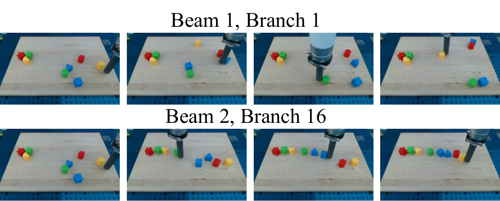
6.3 Long-Horizon Execution
Execution evaluation uses the ground-truth simulation state of the Language Table to calculate reward and completion thresholds. Each method evaluates 50 environments per task, with a maximum of 1500 timesteps per environment; stopping early if completed halfway. The paper states that VLP takes about 1 hour per environment, and RT-2 baseline takes about 0.5 hours.
| Model | Move to Area | Group by Color | Make Line | |||
|---|---|---|---|---|---|---|
| Reward | Completion | Reward | Completion | Reward | Completion | |
| UniPi | 30.8 | 0% | 44.0 | 4% | 44.0 | 4% |
| LAVA | 59.8 | 22% | 50.0 | 2% | 33.5 | 0% |
| RT-2 | 18.5 | 0% | 46.0 | 26% | 36.5 | 2% |
| PaLM-E | 36.5 | 0% | 43.5 | 2% | 26.2 | 0% |
| VLP (Ours) | 87.3 | 64% | 95.8 | 92% | 65.0 | 16% |
The authors point out that the horizon of these tasks is very long, and many baselines will "stuck" and stop effective action. The execution advantage of VLP comes from iteratively planning visual subgoals and executing intermediate frames with a goal-conditioned policy.
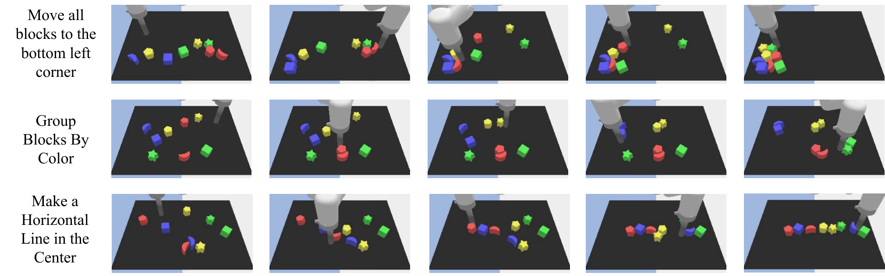
6.4 Execution Budget and Action Extraction Ablation
| Beams | Planning Horizon | Branching Factor | Line Score | Line Completion |
|---|---|---|---|---|
| 1 | 1 | 4 | 48.9 | 0% |
| 1 | 1 | 16 | 53.3 | 2% |
| 1 | 2 | 16 | 58.1 | 8% |
| 2 | 2 | 16 | 65.0 | 16% |
The execution success rate also increases as the planning horizon and branching factor increase, again indicating that test-time planning compute is part of the method.
| Action Inference | Group Color Score | Group Color Completion |
|---|---|---|
| Inverse Dynamics | 89.7 | 80% |
| Goal Policy (Last) | 85.0 | 66% |
| Goal Policy (Every) | 95.8 | 92% |
It is best to use goal-conditioned policy frame by frame, which means that the middle frames in the video plan themselves are valuable dense subgoals; only watching the last frame of the short video will lose execution guidance.
6.5 Real Robot and Multi-Platform Planning
VLP also demonstrated real robot execution with multi-platform video plans: Language Table real robot, 7DoF mobile manipulator, 14DoF bi-manual ALOHA. In the ALOHA setting, the video model outputs 4 camera views at the same time using channel-wise concatenation; VLM policy and heuristic use top/side views.
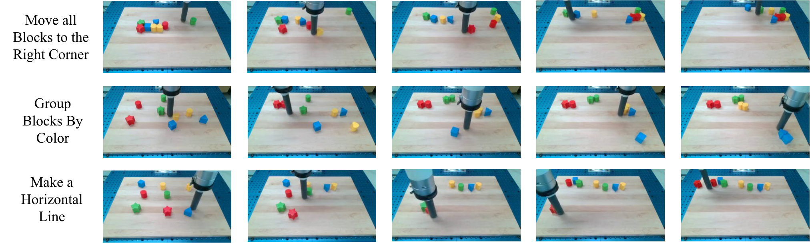
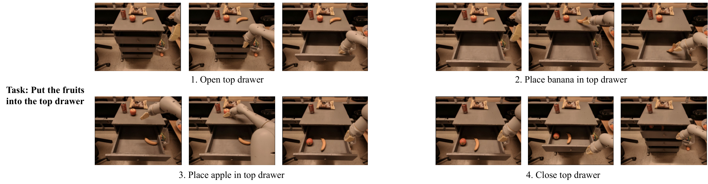
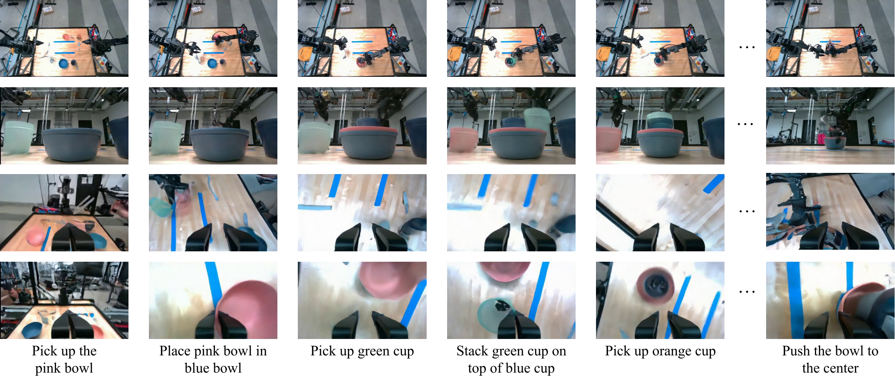
6.6 Generalization
The paper reports generalization to objects, lighting, and new tasks. The core explanation is: after the execution is split into visual goal generation and goal-conditioned controller, the video model is responsible for generating visual goals, and the control strategy only needs to focus on the local information required to reach nearby visual goals.
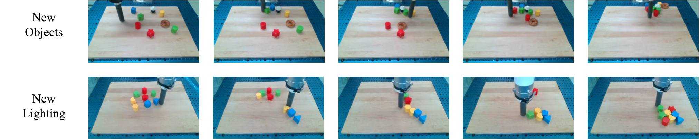
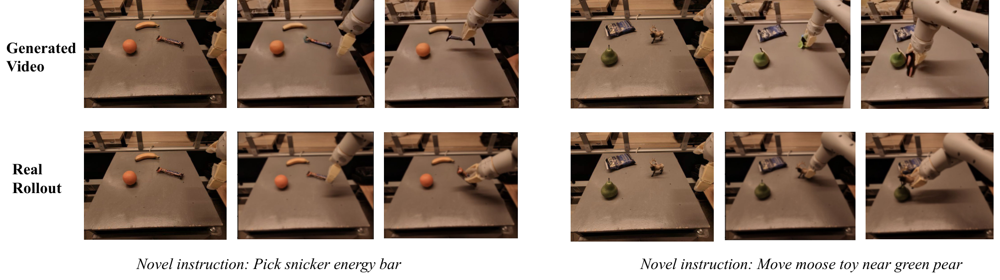
6.7 Appendix Supplementary Results
The appendix adds three categories of results: failure cases, robustness of goal-conditioned policy to noisy synthesized goals, and additional long-range video planning.
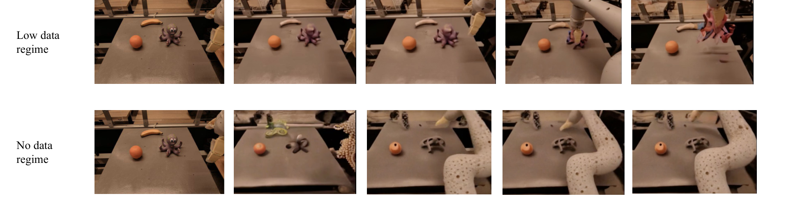
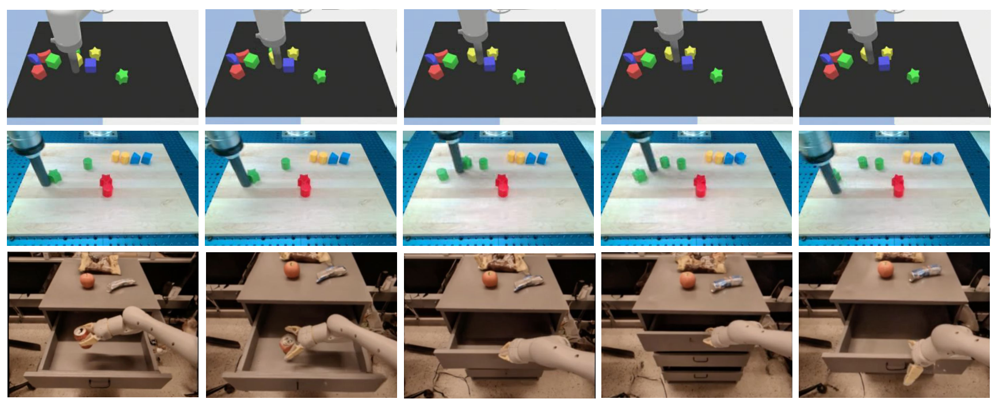
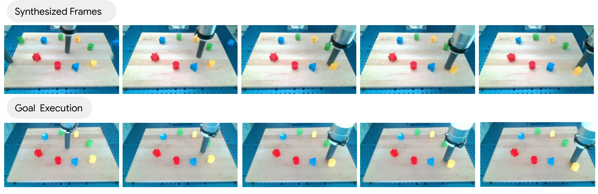
7. Analysis, Limitations and Boundaries
7.1 The most valuable part of this paper
The most valuable part of this paper is that it turns the "basic model combination" into an operational long-range planning algorithm. It does not require a single VLM to understand semantics, physics, dynamics, and control at the same time, nor does it require a single video model to generate a complete long-range plan at once; instead, it allows each model to do what it is relatively good at, and then uses test-time search to combine the capabilities.
From a method perspective, the value of VLP lies in reopening the visual planning route: video is not an accessory to display results, but a state trajectory in the search space; VLM heuristic does not just do captions, but serves as a value-like pruning signal. This combination makes inference computing an adjustable resource, and more search budget can be exchanged for better plans.
7.2 Why the results hold up
First, the main results and method claims of the paper are aligned: VLP claims that tree search combining VLM with video models can improve long-range planning, so the experiment simultaneously evaluates video planning quality and real execution success rate. In the video schedule, VLP is significantly higher than UniPi and no-value-function ablation in the three tasks of sim/real Move, Group, and Make.
Second, the comparisons cover several key alternatives: UniPi for direct long-range video generation, LAVA for direct language/behavior cloning, PaLM-E for direct VLM planning, visual language action model RT-2, and VLP ablation without heuristic. The advantage of VLP is not only relative to a weak baseline, but also better in different paradigms.
Third, ablation proves that the improvement is related to the search Affiliations: the video planning success rate increases from 4% to 56% with beam/language branch/video branch; the execution success rate also increases with the increase of planning horizon and branching factor. Action extraction ablation also shows that the frame-by-frame goal policy is the key to converting video plans into actions.
7.3 Explanation of results clearly given in the paper
- VLM policy alone is not sufficient for long-range planning because it lacks accurate dynamic prediction; video rollout can complement low-level visual dynamics.
- The video model alone is insufficient to directly generate long-range plans because long videos are prone to distortion; language sub-actions and tree search provide hierarchical structures.
- The value-like effect of VLM heuristic can filter out unfavorable rollout, but the no-value-function ablation is significantly worse.
- The goal-conditioned policy is robust to noise in generated goals because it can ignore most irrelevant visual details and focus on local executable goals.
7.4 Author's statement of limitations
| limitations | Explanation in the paper | Scope of influence |
|---|---|---|
| Image status is incomplete | VLP uses images as world state representation, but in many tasks images cannot capture the complete 3D state, hide physical factors or quality. | Tasks related to occlusion, contact force, object weight, and invisible state. |
| Video dynamics are not always accurate | The author observed that objects in synthesized videos may appear spontaneously or teleport. | The search may exploit non-physical rollout, which requires threshold filtering but cannot cure it. |
| Planning reasoning is expensive | Language Table long-range planning takes about 30 minutes; VLP execution takes about 1 hour per environment. | Real-time robotic applications, interactive closed-loop tasks. |
| Depends on domain-specific training | The paper trains separate text-to-video models, separate VLM models per domain, and goal-conditioned policy is also trained by domain. | Cross-platform generalization still requires data and adaptation training. |
7.5 Applicable boundaries
VLP is most suitable for long-range robotic tasks where the goal can be decomposed by language, state changes can be expressed by images/videos, short-range goal-conditioned policies can be learned, and a high inference computational budget is allowed. It is not suitable for tasks that require high-frequency real-time responses, strong latent state reasoning, precise contact force control, or where video models cannot reliably simulate key dynamics.
8. Reproducibility Audit
8.1 Data and tasks
- Given: The Language Table has about 10, 000 long-horizon trajectories, covering simulation and reality, and hundreds of long-horizon goals; the experiment selects 3 goals for automatic evaluation, about 20, 000 trajectories and 400, 000 short-horizon text labels.
- Given: 7DoF mobile manipulator uses RT-1 dataset; generalization experiments mix 7DoF, Bridge, RT-2, Ego4D, EPIC-KITCHEN, LAION-400M.
- Given: 14DoF ALOHA uses about 1200 teleoped demonstrations, each with about 20 language instructions, for a total of about 25k short-horizon text labels.
8.2 Assessment details
- Video evaluation: 50 videos are generated for each goal and each method, and human judgment is made as to whether the long-horizon goal is met.
- Execution evaluation: Language Table uses ground-truth simulation state to calculate reward; 50 environments per task per method; up to 1500 timesteps per environment, stopping early when completed.
- VLP execution settings: planning horizon 2, beam width 2, branching factor 16; in the simulation, the goal-conditioned policy is called 4 times per frame for the first 16 frames of the video plan; in the real environment, the goal-conditioned policy is called for the first 10 frames.
8.3 Training and computing power
The threshold for reproducibility is high: the video model is trained for several days using 64 TPUv3 pods, the VLM is 12B PaLM-E, and the goal-conditioned policy also uses 16 TPUv3 pods. The paper provides directional configuration, but it is difficult for ordinary laboratories to reproduce it on a large scale.
8.4 Minimum recurrence path
A more realistic route to reproduce is to first scale down to Language Table simulation: train a small VLM/action-label predictor or a fixed set of action proposals, train a low-resolution short-range video model, train a goal-conditioned policy, and then compare UniPi-style direct long-video generation, no-value-function VLP and full VLP. The key is not to reproduce 12B PaLM-E, but to verify whether "video rollout + heuristic search" is better than direct long-range video generation.